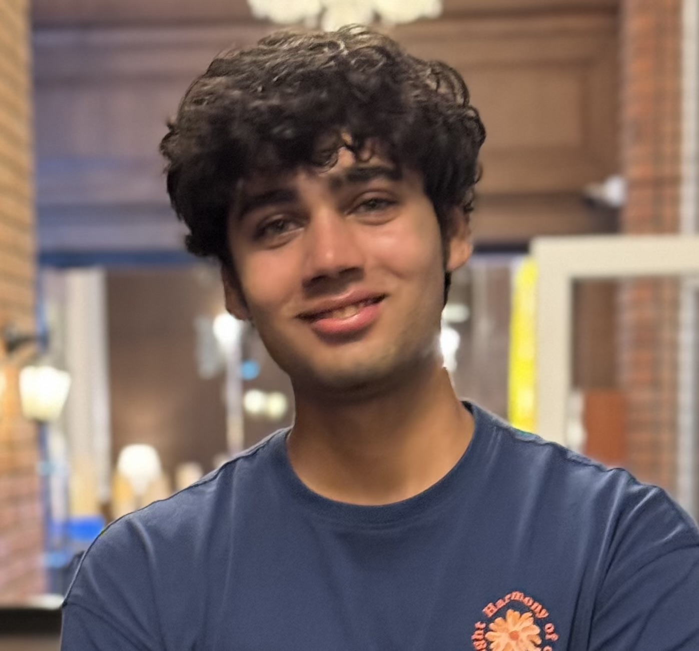

AI Researcher · Google DeepMind
Kartik
Singhal
I am interested in building AI systems that can learn, reason, and adapt beyond the tasks they have seen. My long-term goal is to develop increasingly capable agents that extend the frontier of intelligence and accelerate discovery.

Work experience
Tower Research Capital ML Intern, Core AI/ML
- Developed and deployed a multi-agent AI assistant to help quant teams with technical questions and assist them in their day-to-day workflows. Extended this to a coding assistant to support AI code reviews and repository-level code generation.
- Organized different internal data stores into useful formats for vector databases and trained a custom tokenizer+embedding model to significantly improve retrieval accuracy since pre-trained models struggled to index knowledge in the finance domain.
TCS Research & Innovation Labs Research Intern
- Worked with Dr. Gautam Shroff on neuro-symbolic AI and program synthesis for the Abstraction & Reasoning Corpus (ARC).
- Formulated ConceptSearch, a function-search algorithm using LLMs for program generation guided by a novel concept-based critic instead of hamming distance, leading to ~30% higher search efficiency.
- Published as first author at AAAI 2025.
University of South Carolina Research Intern
- Worked with Prof. Pooyan Jamshidi on an embodied AI task of multiple-point-goal audio-visual navigation by extending Habitat-Sim and SoundSpaces 2.0 simulators to support multi-goal navigation tasks on Matterport3D dataset.
- Configured distributed training jobs on the university cluster to train end-to-end audio-visual policies using distributed PPO.
- Our results showed that policy trained for single-source navigation transfer well to multi-target settings with only 10% more training steps achieving 11% shorter path length.
- Published as first author at IROS 2023 Workshop.
Publications
AAAI 2025 · Philadelphia, USA
ConceptSearch: Towards efficient program search using LLMs for ARC ↗
Kartik Singhal, Gautam Shroff
IROS Workshop 2023 · Detroit, USA
Multi-Sense-Rescuer: Multi-Target Audio-Visual Learning in Search and Rescue ↗
Kartik Singhal, Mehdi Yaghouti, Pooyan Jamshidi
Education
IIIT Delhi
B.Tech., Computer Science & Applied Mathematics
Aug 2021 — May 2025 · CGPA 8.7/10
Awards & service
Google Code-In 2019 Grand Prize Winner.
Reviewer, International Joint Conference on Artificial Intelligence (IJCAI) 2026.